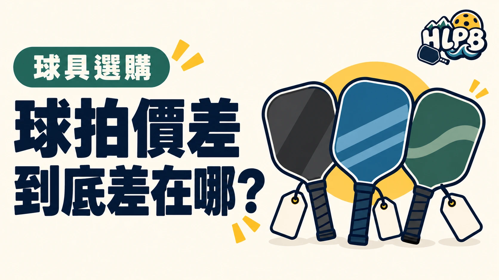

買匹克球拍，看到兩支都寫「碳纖維」，價格卻差很多，很容易不知道該選哪支。
碳纖維只是拍面材料的一項描述，不是整支球拍的規格。即使材料名稱相同，表面處理、內芯、厚度、拍型與重量分布仍可能不同。
價差比較，先問這五件事
| 比較項目 | 買之前問清楚 |
|---|---|
| 拍面與表面處理 | 完整材料是什麼？表面如何處理？ |
| 內芯 | 使用什麼材料？泡棉用在哪個部位？ |
| 厚度 | 是否為同系列、同拍型的不同厚度版本？ |
| 重量與握把 | 實際重量、握把粗細與握柄長度是否合適？ |
| 售後 | 誰負責受理？保固涵蓋什麼、排除什麼？ |
JOOLA 的官方資料也將拍面材料、拍型、厚度與打法分開介紹，不能只靠一項規格判斷整支拍。
多花的錢，有沒有換到你用得上的差異？
試打時，別只試大力抽球。也試短球、擋球、底線回球與連續揮拍，觀察哪支比較容易用自己的動作控制。
這是 HLPB 的比較建議：
| 試打感受 | 接著確認 |
|---|---|
| 出球快，但短球容易打長 | 是否能調整力道，接受這種回彈反應？ |
| 拿著不重，連續揮拍卻吃力 | 連同重量分布與握持方式比較 |
| 價格更高，卻說不出差在哪 | 先取得完整規格與試打機會，再決定 |
預算上限不是一定要花完的金額。先找出自己最在意的需求，再決定值不值得加預算。
價差到底在買什麼？先把一支拍拆開看
同樣標示碳纖維，並不代表用料與結構相同。碳纖維是材料名稱，拍面鋪層、表面處理、內芯配置與握柄仍是不同項目。只有在完整規格公開時，才有辦法比較兩支拍差在哪；若商品只寫『頂級碳纖維』，資訊仍不足。
較高售價可能伴隨不同結構、研發、品管、通路服務或品牌定位，但無法從售價反推出各項成本。購買時要請販售者說清楚『這個型號增加了什麼』，而非只接受『比較高級』。
不同預算，應該把錢花在哪裡？
以下以選購目的整理，不是市場價格統計，也不把材料硬分成低價與高價。
| 預算使用方向 | 優先確認 | 值得加預算的條件 |
|---|---|---|
| 先建立自己的第一套器材 | 來源、完整規格、握把與基本操控是否合適 | 原候選拍在握持或基本回球上明顯不合適 |
| 已有球拍，準備換拍 | 目前最不滿意的使用感受是什麼 | 新拍在同條件試打中，能改善自己在意的問題 |
| 考慮高價或旗艦拍 | 特定結構、尺寸與售後是否真有差別 | 能說出實際使用差異，也接受相伴的取捨 |
貴的球拍一定比較有旋轉、比較耐用嗎？
不能只憑價格下結論。旋轉、出球與穩定度要看整拍設計及實際測試；保固長短也不等同於使用壽命。耐用問題應核對原廠保障範圍、正常磨耗排除項目與在臺受理窗口。沒有可比較的測試，就不要把價差改寫成性能倍數。
什麼時候可以先不升級？
如果還說不出目前球拍哪裡不合適，先記錄幾次練習的感受，再安排交替試打。將同一筆預算同時考慮球、握把耗材與學習需求，比一次買到最貴更容易看出支出的用途。當握持舒服、回球可控制、來源與售後清楚時，低於預算上限的選項也可以成立。
HLPB 建議用『規格差異 → 試打差異 → 願意付的價差』作決策。三者連不起來，就先取得資料，無須急著升級。
來源：JOOLA 拍面材料介紹、JOOLA 官方選拍指南。資料核對：2026/10/19；試打比較為 HLPB 編輯建議。
最後查證：2026-10-19｜資料來源：HLPB 編輯整理與正文所列官方資料
返回文章列表